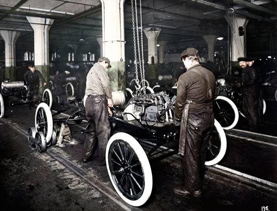
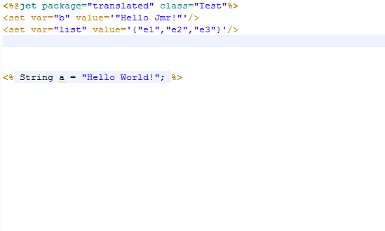
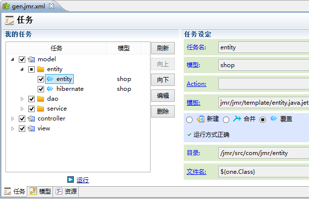
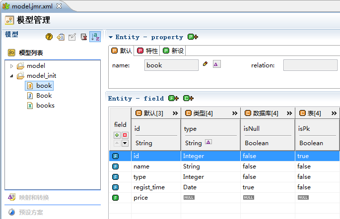

欢迎来到我们的舞台
只要1分钟，就能了解Jmr是什么，创造什么价值。

汽车发明之初...
工人全靠手工装配，生产一辆汽车需要728小时；亨利·福特，使用流水线，大幅提高了生产效率，生产一辆车缩短到12.5小时。
轮回的历史
和当年的汽车工人一样，程序员几乎依赖手工来“装配”软件。令人嘘唏的是：大部分的产品可以自动化批量生产，为什么软件不能？
种田和编程
种田和编程有很多相似的地方，在肥沃的平原上，已经普及机械化种植。编程也有很多有规律、重复的代码可以自动化。
|
|
种田
|
编程
|
自动化难易
|
| 1 |
调查地形和土壤 |
调研市场、需求分析 |
难 |
| 2 |
选种、开荒 |
需求设计、搭框架 |
难（只做一次） |
| 3 |
山地的种植 |
业务、算法的代码 |
难（多样、针对性） |
| 4 |
平原的种植 |
有规律、重复的代码 |
易 |
| 5 |
施肥、锄草 |
维护、测试 |
易难皆有 |
Jmr的设计理念
让规律、重复的代码，实现自动化。
移植智能工厂理念
|
智能工厂
|
Jmr
|
| 模具：生产零件 |
模板：生产代码的模具 |
| 机械臂：组装零件的机械手 |
模板引擎：装配模板的机械臂 |
| 个性方案：定制化的方案 |
模型：注入模板的个性方案 |
模板：生产代码的模具
作用：把有规律、重复的内容固定下来。
语法：类似于Jsp，轻松上手！
通用：可以生成任何语言、测试用例、文档。
更多...

智能编辑器
专属的模板编辑器，写模板更加得心应手。

模板引擎：装配模板的机械臂
作用：配置任务、装配模板，生成代码和文档。
脱耦：任何项目、框架都可以使用。
独立：体系独立，无需改变项目结构。
更多...

个性方案：定制化的方案
作用：往模板中注入的模型和数据。
模型：数据库、Xml、Java的数据。
预设和转换：可以在预设模型、映射类型。
Action：可自定义数据注入模板。
更多...
为什么要用Jmr？
把有规律重复的代码交给我们，您的精力才能用在技术难点和业务逻辑上，真正节省时间提高效率的利器。
通用：任何代码，测试用例、文档均可生成。
系统：完善的体系，方便管理模型和任务。
独立：任何项目、框架都可以集成。
其它：学习成本低，附带完善的文档。